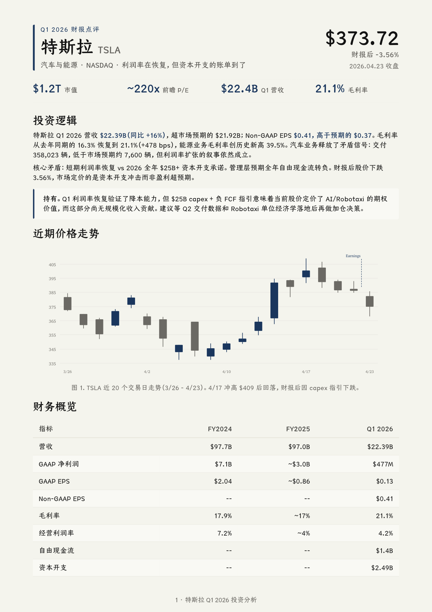

面向一页纸、白皮书、简历和作品集的文档优先 PC/Web 主题。
A document-first PC/Web theme for one-pagers, white papers, resumes, and portfolios.

#f7f1e3: #f7f1e3#1f3a5f: #1f3a5f#2f2a24: #2f2a24#b88746: #b88746#fffaf0: #fffaf0#e4d5bd: #e4d5bd#375f8e: #375f8efontFamily: [object Object]fontSize: [object Object]lineHeight: [object Object]letterSpacing: [object Object]control: 6pxcard: 4pxpreview: 0pxxs: 6pxsm: 10pxmd: 16pxlg: 24pxxl: 36pxsection: 64px